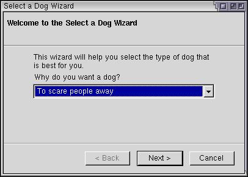

Creating a Wizard
Many applications use wizards to help the user through complex tasks. XUL provides a way to create wizards easily.
The Wizard
A wizard is a special type of dialog that contains a number of pages. Navigation buttons appear on the bottom of the dialog to switch between pages. The wizards are usually used to help the user perform a complex task. Each page contains a single question or a set of related questions. After the last page, the operation is carried out.
XUL provides a wizard element which can be used to create wizards. The contents inside the wizard element include all the content of every page of the wizard. Attributes placed on the wizard are used to control the wizard navigation. When creating a wizard, use the wizard tag instead of the window tag.
Note that wizards currently only work properly from chrome URLs.
The wizard consists of several sections, although the exact layout will vary for each platform. The wizard will generally be displayed like those on the user's platform. A typical layout will include a title across the top, a set of navigation buttons across the bottom and the page contents in between.
The title across the top is created using the title attribute, much like one would do for regular windows. The navigation buttons are created automatically. The pages of the wizard are created using the wizardpage element. You can place whatever content you want inside each wizardpage. Here is an example wizard:
Example 12.4.1: Source
<?xml version="1.0"?>
<?xml-stylesheet href="chrome://global/skin/" type="text/css"?>
<wizard id="example-window" title="Select a Dog Wizard"
xmlns="http://www.mozilla.org/keymaster/gatekeeper/there.is.only.xul">
<wizardpage>
<description>
This wizard will help you select the type of dog that is best for you."
</description>
<label value="Why do you want a dog?"/>
<menulist>
<menupopup>
<menuitem label="To scare people away"/>
<menuitem label="To get rid of a cat"/>
<menuitem label="I need a best friend"/>
</menupopup>
</menulist>
</wizardpage>
<wizardpage description="Dog Details">
<label value="Provide additional details about the dog you would like:"/>
<radiogroup>
<caption label="Size"/>
<radio value="small" label="Small"/>
<radio value="large" label="Large"/>
</radiogroup>
<radiogroup>
<caption label="Gender"/>
<radio value="male" label="Male"/>
<radio value="female" label="Female"/>
</radiogroup>
</wizardpage>
</wizard>
This wizard has two pages, one that has a drop-dowm menu and the other with a set of radio buttons. The wizard will be formatted automatically, with a title across the top and a set of buttons along the bottom. The user can navigate between the pages of the wizard with the Back and Next buttons. These buttons will enable and disable themselves at the appropriate moments. In addition, on the last page, the Finish button will appear. All of this is automatic, so you don't have to do anything to manipulate the pages.
The description attribute may optionally placed on a wizardpage element to provide a sub-caption for that page. In the example above, it has been placed on the second page, but not the first page.
Handling Page Changes
You will generally want to do something once the Finish button is pressed. You can set an attribute onwizardfinish on the wizard element to accomplish this. Set it to a script which performs whatever task you want and then returns true. This script might be used to save the information that the user entered during the wizard.
For example:
<wizard id="example-window" title="Select a Dog Wizard" onwizardfinish="return saveDogInfo();" xmlns="http://www.mozilla.org/keymaster/gatekeeper/there.is.only.xul">
When the user clicks the Finish button, the function 'saveDogInfo' will be called, which would be defined in a script file to save the information that was entered. If the function returns true, the wizard closes. If it returns false, then the wizard does not close, which might occur if the function 'saveDogInfo' encountered invalid input, for example.
There are also related onwizardback, onwizardnext and onwizardcancel attributes, which are called when the Back, Next and Cancel buttons are pressed. These functions are called regardless of which page is currently displayed.
To have different code called depending on which page you are on, use the onpagerewound or onpageadvanced attributes on a wizardpage element. They work similar to the other functions except that you can use different code for each page. This allows you to validate the input entered on each page before the user continues.
A third method is to use the onpagehide and onpageshow attributes on the wizardpage element. They will be called when the page is hidden or shown, regardless of which button was pressed (except when Cancel is pressed -- you need to use onwizardcancel to check for this.)
These three methods should provide enough flexibility to handle navigation as you need to. The following is a summary of attribute functions that are called when the user presses Next, in the order that they will be checked. As soon as one returns false, the navigation will be cancelled.
| Attribute | Place on Tag | When it is Called |
| pagehide | wizardpage | Called on the page that the user is leaving. |
| pageadvanced | wizardpage | Called on the page the user is leaving. |
| wizardnext | wizard | Called on the wizard. |
| pageshow | wizardpage | Called on the page that the user is entering. |
A similar process occurs for the Back button.
(Next) In the next section, we'll see some additional features of wizards.
Examples: 12.4.1